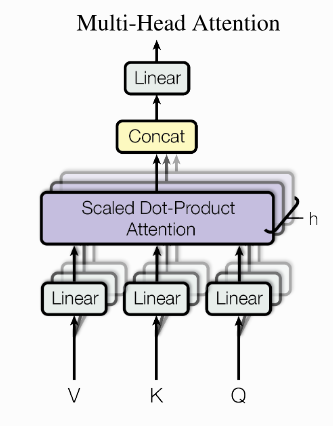

Dans ce chapitre, nous allons explorer ensemble le module de self-attention, qui constitue l'architecture principale des réseaux de neurones profonds modernes de type Transformers. Si ce terme ne vous est pas familier, il est possible que vous l'ayez déjà rencontré sans le savoir dans l'acronyme "GPT" (Generative Pre-trained Transformer).
Pour être tout à fait honnête, comprendre l'intégralité d'un Transformer ou de son bloc architectural principal, appelé "self-attention", nécessite un minimum de connaissances mathématiques assez avancées. Lors de ce TP, nous allons vous guider pas à pas pour vous permettre de comprendre l'essentiel et de développer une telle architecture.
Disclaimer
Ce chapitre abordera presque intégralement le papier "Attention Is All You Need", publié en 2017, qui a complètement révolutionné notre manière de développer les réseaux de neurones profonds, notamment dans la génération d'images et de texte. Vous acquerrez toutes les connaissances techniques nécessaires pour comprendre ces géants technologiques. Que vous souhaitiez poursuivre dans le domaine de l'intelligence artificielle après votre master ou non, je pense que la maîtrise de ces nouvelles technologies sera un atout majeur pour tous, ou au moins cela vous servira de culture générale.
Pour ce premier cours, vous allez réutiliser les boucles d'entraînement que vous avez réalisées lors du premier chapitre (c'est pourquoi il était essentiel que vous ayez suivi les deux chapitres...). Si vous n'avez pas de boucle d'entraînement, n'hésitez pas à demander à vos camarades (ou a ChatGPT).
Je ne reviendrai pas sur le cours (j'espère que vous avez pris des notes), mais je vais vous fournir toutes les informations nécessaires.
Transformer
Le Transformer (Transformateur en français...) est une architecture de réseau de neurones qui a profondément modifié l'approche des modèles d'apprentissage profond, en particulier ceux à très grande échelle. Comme indiqué précédement, il a été introduit dans Attention is All You Need (2017) et est devenu depuis la base de modèles tels que GPT d'OpenAI, Llama de Meta, Gemini de Google et Claude d'AntrhopicAI. Au-delà de la génération de texte, les Transformers sont également utilisés pour la génération audio, image et vidéo, ainsi que pour des tâches telles que la reconnaisance d'images, la classification et la détection d'objets en vision par ordinateur.
Les Transformers fonctionnent mal dans des scénarios avec un nombre modéré de paramètres (1-100M), où les CNN restent plus efficaces en termes de temps d'entraînement, d'utilisation des ressources et de coûts d'inférence. Cependant, à très grande échelle, les Transformers excellent dans la généralisation. Cette capacité leur permet de traiter le langage de manière intuitive et contextuelle, à la différence des anciens chatbots, qui étaient rigides et limités à des entrées prédéfinies. Les Transformers apportent également cette capacité de généralisation à la génération d'images, produisant des résultats artistiques et aux qualités proches de celles créées par des humains.
Dans ce chapitre, nous allons nous concentrer sur les Transformers visuels et leurs applications aux tâches de vision par ordinateurs. Pour les problèmes textuels, l’architecture sous-jacente est presque identique, à l’exception de l’absence d’une étape de décodage. Vous apprendrez comment le module de base du Transformer est structuré (applicable aux modèles comme GPT-2 et GPT-3) et construirez un modèle simple pour la vision par ordinateur. Gardez à l’esprit que les architectures basées sur les Transformers nécessitent d’importantes quantités de données et une puissance de calcul conséquente à grande échelle. Dans ce cours, la précision obtenue peut ne pas égaler celle des solutions basées sur les CNN, comme mentionné précédemment.
Le bon format
Comme les CNN, les Transformers nécessitent un format spécifique pour interpréter et traiter les données d'entrée. Cependant, contrairement aux CNN, conçus pour les images, les Transformers ont été développés à l'origine pour le texte, ce qui implique un format légèrement différent. Traditionnellement, le texte est converti en un vecteur appelé token embedding, une méthode qui transforme les mots en une représentation numérique. À cela s’ajoute la position de chaque mot dans la phrase initiale, un élément crucial pour préserver le sens et la structure après le passage dans l’ensemble du module.
Pour les images, il n’est pas nécessaire de "tokeniser" l’entrée, c’est-à-dire de lui attribuer des valeurs numériques, car elles sont déjà représentées sous forme numérique. Cependant, il est essentiel de trouver un moyen de reformater l'image afin qu'elle corresponde à un format similaire à celui utilisé pour les phrases.
La première option consiste à patchifier l’image en disposant les informations de chaque patch sous forme de vecteur, placés les uns à côté des autres. Cela peut être fait manuellement, mais cette méthode est peu efficace.
La deuxième option est d'utiliser l'API einops (que je vous recommande d’installer si ce n’est pas déjà fait).
Enfin, la méthode la plus simple consiste à utiliser des convolutions avec un stride égal à la taille spatiale du filtre, simulant ainsi l’effet des patches. Il suffit ensuite d’aplatir (nn.Flatten()) la sortie et de permuter les dimensions pour positionner les couches en dernière position. Cela sera utile pour passer la sortie dans des couches nn.Linear.
Setup: reprenez le code du précédent chapitre avec CIFAR pour tester votre approche.
1. Récupérer une image du Dataset ou Dataloader et affichez la.
2. Calculer le nombre de patch nécessaire
height = 32
width = 32
color_channels = 3
patch_size = 4 #votre valeur
#Calcul du nombre de patchs
number_of_patches = #vu en cours
3. Utiliser une convolution pour générer des patchs
patchenizer = nn.Conv2d(...TODO...)
4. Créer un objet pour réaliser les patchs. Dans la fonction forward(), utilisez nn.Flatten() et nn.Permute() afin de mettre les dimensions spatiales sous forme 1D et de mettre la dimension des couches en dernière position.
Avec un tenseur 3x32x32, vous devez obtenir en sortie: 64x16. (16 = nb_patch) (64=8*8 - taille spatiale flatten)
Scaled Dot Product Attention
L'objectif principal derrière le terme "self-attention" est de permettre une vue plus globale de l'ensemble des éléments qui composent votre entrée. Cette entrée peut être une séquence de mots, une séquence de sons, ou même une image. Comme nous l'avons vu dans le chapitre précédent, les convolutions ont une "attention" limitée à une fenêtre de taille fixe : elles peuvent "voir" une fenêtre de taille kk à un instant t. Même si cette fenêtre "glisse" sur l'ensemble de votre image ou séquence, l'observation reste toujours limitée à kk à l'instant t. La self-attention, grâce à des mécanismes mathématiques, permet d'observer l'intégralité de votre séquence ou image avec seulement deux opérations, entrecoupées de multi-layer perceptrons.
Dans un premier temps, nous allons apprendre à transformer nos images en séquences, puis à les décomposer en trois parties pour notre tenseur sous la forme Queries (Q), Keys (K), Values (K), afin de pouvoir réaliser l'opération suivante de l'attention :
Terme technique : votre dimension spatiale, aplatie correspond à la "séquence". La dimension des couches (channels) reste toujours en dernière position.
$\begin{eqnarray}Q \in \mathbb{R}^{Seq, dim_q}\end{eqnarray}$
$\begin{eqnarray}K \in \mathbb{R}^{Seq, dim_k}\end{eqnarray}$
$\begin{eqnarray}V \in \mathbb{R}^{Seq, dim_v}\end{eqnarray}$
$\begin{eqnarray}Attention(Q,K,V) = softmax(\frac{QK^T}{\sqrt{d_k}})V\end{eqnarray}$
Maintenant que nous savons transformer une image en séquence, nous allons pouvoir commencer à écrire notre code de self-attention. Comme nous l'avons vu durant le cours, cette architecture repose sur le produit scalaire (dot-product en anglais, terme couramment utilisé en Deep Learning). Vous devez compléter le code suivant (à trous, je vous aide un peu plus que la dernière fois :) ) en suivant la formule présentée en début de chapitre. Voici un peu d'aide pour la multiplication matricielle :
Pensez bien à faire correspondre les dimensions !!
def scaled_dot_product(q, k, v):
d_k = q.size()[-1]
attn_logits = #multiplication matricielle entre q et k
attn_logits = #scaling avec d_k (voir equation)
attention = #faire le softmax sur la dernière dimension
values = #multiplication matricielle avec v
return values
Lancez le code suivant pour vérifier que tout fonctionne :
seq_len, d_k = 3, 2
q = torch.randn(seq_len, d_k)
k = torch.randn(seq_len, d_k)
v = torch.randn(seq_len, d_k)
values = scaled_dot_product(q, k, v)
print("Q\n", q.shape)
print("K\n", k.shape)
print("V\n", v.shape)
print("Values\n", values.shape)
#doit correspondre à la même shape
Avant de vous faire coder le bloc dans son intégralité, nous allons décomposer les étapes une par une. Dans un premier temps, pour simuler Q , K et V à partir d'une entrée x sous la forme Sequence, Dimension, nous avons trois options.
La première : utiliser trois MLP (nn.Linear) sur x . Cependant, cette méthode n'est pas optimisée pour le calcul, encore moins pour votre GPU.
La seconde : utiliser un seul MLP sur x . Plutôt que d'avoir une couche d'entrée et une couche de sortie, nous allons définir notre MLP ainsi : Couche entrante, Couche Sortante * 3.
Enfin, une fois cela fait, nous pouvons utiliser une fonction PyTorch pour "couper" notre tenseur de sortie en trois parties ! Et voilà, vous avez codé de manière intelligente, tout en respectant le coût de calcul. (Oui, vous pouvez vérifier : trois appels de fonction nn.Linear, plus leur taille en mémoire (objet Python+Torch), plus les trois appels séquentiels sont beaucoup moins rapides qu'un simple nn.Linear avec les trois dimensions directement intégrées.)
TODO: Coder en PyTorch, une classe qkv_proj qui prend un dimension en entrée, une dimension en sortie, qui resort un tupleq,k,v.
class qkv_proj(nn.Module):
def __init__(self, d_in, d_out):
super().__init__()
self.proj = nn.Linear(...TODO)
def forward(self, x):
x = self.proj(x)
return x.chunk(3, dim=-1)
Petit rappel : dim=-1 signifie la dernière dimension. Si vous vous souvenez du chapitre précédent, dans un MLP, la couche "channels" (la 3eme dimension) est en dernière position.
Vérifiez avec un print sur la taille de votre tenseur que vous obtenez bien le nombre de couches d'entrée multiplié par 3.
Multi-Head Attention
Les Transformers, et plus particulièrement le principe de self-attention, ont émergé dans le contexte du remplacement des réseaux de neurones récurrents (RNN). Ils ont été conçus pour fonctionner avec des séquences. Au lieu de répéter notre bloc à chaque fois sur la même entrée x comme dans un RNN, nous appliquons la fonction définie précédemment plusieurs fois sur l'entrée x . Pour ce faire, nous devons diviser notre séquence par un nombre h pour "heads", c'est-à-dire le nombre de fois où nous voulons utiliser la self-attention sur une entrée. C'est de là que vient le nom : Multi-Head Attention, comme le montre le schéma suivant.

Nous devons maintenant gérer la dimension de la tête ! Pour ça, il va falloir changer la fonction "forward" de notre classe précédente. Pour ça, nous allons réutiliser la fonction reshape et permute. Dans un premier temps, ajoutez à votre classe pyTorch, un paramètre num_heads, puis initialisez le dans une variable de classe. Utilisez la fonction reshape pour y intégrer votre nouvelle dimension. Permutez votre projection au format suivant (le code est donné, normalement, si vous avez réalisé l'étape 1 et 2 correctement, tout devrais fonctionner).
class qkv_proj(nn.Module):
def __init__(self, d_in, d_out, num_heads):
super().__init__()
self.num_heads = num_heads
self.proj = nn.Linear(...TODO)
def forward(self, x):
batch_size, seq_length, _ = x.size()
qkv = self.proj(x)
qkv = qkv.reshape(batch_size, seq_length, self.num_heads, -1)
qkv.permute(#TODO) #permute Batch, Head, SeqLen, Dims
return qkv.chunk(3, dim=-1)
Vérifiez votre immplémentation avec le code suivant :
q,k,v = qkv_proj(32, 32*3, 4)(torch.randn(1,64,32))
q.shape, k.shape, v.shape
>Tout est prêt !
Complétez le code à trous suivant pour finaliser notre MultiHeadAttention, qui utilise nos projections q , k , v et notre ScaledDotProduct.
PS: c'est un gros morceau, mais vous allez y arriver, j'ai mis plus d'aide cette fois :)
class MultiheadAttention(nn.Module):
def __init__(self, input_dim, embed_dim, num_heads):
super().__init__()
#ps: juste pour vérifier que votre dimension
# match bien le nombre de tête...
assert embed_dim % num_heads == 0
self.embed_dim = embed_dim
self.num_heads = num_heads
#in_proj - votre fonction qkv_proj créé précédement
self.in_proj = qkv_proj(input_dim, embed_dim*3, num_heads)
self.o_proj = nn.Linear(embed_dim, embed_dim)
def forward(self, x):
batch_size, seq_length, _ = x.size()
q, k, v = self.in_proj(x)
#appeler votre fonction scaled_dot_product
attn = TODO...
#Permute back
#Votre position de départ : [Batch, Head, SeqLen, Dims]
#Permute dans la nouvelle dim : [Batch, SeqLen, Head, Dims]
attn = attn.permute(TODO...)
#reshape pour retirer la dimension "head".
#aide : position de départ [Batch, SeqLen, Head, Dims]
# position d'arrivée [Batch, SeqLen, self.embed_dim]
attn = attn.reshape(TODO...)
out = self.o_proj(attn)
return out
Sanity check: Votre code doit fonctionner avec ces 2 cas d'usage.
Le premier, quand on garde la même dimension en entrée et en sortie.
net = MultiheadAttention(64, 64, 4)
net(torch.randn(1,16*16,64)).shape
Le deuxième, quand on souhaite aller vers une nouvelle dimension.
net = MultiheadAttention(64, 256, 4)
net(torch.randn(1,16*16,64)).shape
Si ça ne fonctionne pas, il y a probablement un problème du côté de la projection (in_proj et o_proj).
Nous avons fait le plus dur ! Maintenant, nous allons coder un réseau de neurones qui utilise efficacement l'attention. Dans ChatGPT, le bloc utilisé s'appelle après l'attention s'appelle le FeedForward. Il est composé d'un Linear allant d'une dimension d'entrée à une dimension étendue, puis une activation GELU(), puis,encore un Linear allant de la dimension étendue à la dimension d'entrée.
class FeedForward(nn.Module):
def __init__(self, dim, hidden_dim):
super().__init__()
self.net = nn.Sequential(
...TODO...
)
def forward(self, x):
return self.net(x)
Créez une classe Transformer qui prend en entrée, la dimension de départ (celle calculée après avoir mis votre image sous forme de patch), le nombre de têtes, ainsi que le nombre de dimension caché (pour le feed forward). Dans cette classe, vous devez faire appel à la MultiHeadAttention, puis au FeedForward.
class Transformer(nn.Module):
def __init__(self, dim, heads, hidden_dim):
super().__init__()
...TODO...
def forward(self, x):
...TODO...
A rendre
Eous créerez une classe ViT, qui réalise l'intégralité des étapes. Soit, la mise en patch de votre image, puis plusieurs appelle au Transformer.
Vous devez créer ce qu'on appelle un TowerViT, c'est-à-dire que les dimensions sont statiques tout du long (il suffit juste de répéter plusieurs blocs type Transformers).
Vous devez ensuite créer un vrai ViT, un modèle avec plusieurs dimensions d'entrée et de sortie (que vous devrez gérer).
Le code
Votre réseau de neurones s'entraînera sur CIFAR10 comme le TP précédent. Nous vous inquiétez pas si le code est très lent ou prend du temps à s'entraîner pour des résultats médiocres, les transformers fonctionne réellement vers le milliard de paramètres... Dans votre cas, quelques millions de paramètres et un code qui fonctionne suffiront à avoir une bonne note, bon courage ! :)
Fast redirections
Chapitre 1 : Pytorch - Etude sur CIFAR
Chapitre 2 : "Deep Dive" - Architecture de réseaux de neurones avancées
Chapitre 3 : Transformers - Architecture basé sur la self-attention